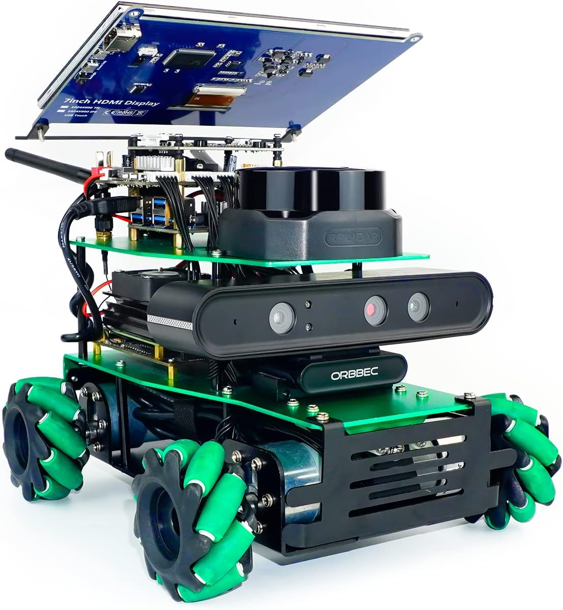

Robotics & Electronics
Circuits, sensors, motors, Arduino, ESP32, Raspberry Pi and prototype development.
Empowering the next generation of engineers, innovators and technology leaders with hands-on learning, teamwork and real projects.
Explore ProgrammesEnrolment Enquiries
Circuits, sensors, motors, Arduino, ESP32, Raspberry Pi and prototype development.
Python, C, Java, Linux, computer vision and problem-solving through software projects.
Drone technology, engineering design, practical demonstrations and team innovation challenges.
Ages 7–18 · Nassau, Bahamas. Learning through guided projects, engineering notebooks and student demonstrations. Contact the academy for current class dates, availability and registration details.
Our students work toward practical demonstrations in robotics, programming, sensing, aviation technology and AI. We are preparing for the Future Engineering Academy Tech Innovation Expo planned for January 22, 2027; programme and event details are subject to confirmation.
Ask about the robotics club, class enrolment, school programmes and partnership opportunities.